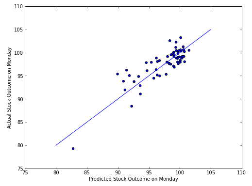
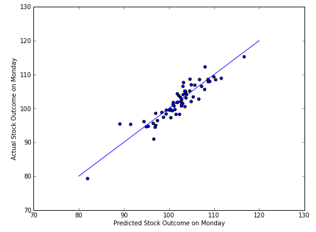

The Idea
One Tuesday evening, Sam, Karl, and Yuechen sat within the hallowed halls of Harvard, pondering the next big problem that they want to solve using data. Sam exclaimed, "Guys, wouldn't it be awesome if we could predict stock movement? We'd be billionaires overnight!"
Indeed, that would be cool. But exactly how might we do that?
"We could analyze Google Trend data," Sam said, "Maybe the popularity of certain search terms on Google would give us a clue about how stock price for a certain company is going move."
"So, you mean, if over a week, people searched the word Apple a lot, that could indicate that Apple's stock is going to rise?" Yuechen asked, skeptical.
The idea was crazy. But these kids were pretty crazy too. Besides, it doesn't hurt to try, right?
Using One Week to Predict the Next
So, they embarked on this project. The hypothesis was that the stock prices for a company for each day of the previous week, along with the Google search popularity of that company's name will give us some clues about how the stock will perform on the following Monday. The idea was so crazy it just might work.
After downloading all the search data from Google and the stock price data from Yahoo for Apple Corporation, SKY began to try to predict the stock movement of Apple's stock from week to week.
Results and Conclusions
Google Trend Data Alone Cannot Predict Stock Price (Linear Regression)
Trying to predict the outcome for Monday stock looked very promsing at first:

The closer the points to the blue line, the better the predictions for the price of the stock on Monday! Wow, Sam, Karl, and Yuechen are going to become really rich, really fast! Next, the past week's stock price data was taken out of the analysis. the result is as follows:

Ooh, it looks like only using Google Trend data to predict stock movement is pretty futile. What if only the past week's stock data was used for analysis?
From this analysis, it can be preliminarily concluded that using Google Trends alone results in a very weak predictor of stock prices, at least with a simple linear regression model.
Google Trend + Stock Price Data was a Deceptively Good Stock Price Predictor (Linear Regression)
Remember how happy they were when they saw Figure 1 above? Their dreams were quick to be dashed. The prediction above was made for Mondays stock price relative to the highest stock price from last week. That is, the value for Monday's stock was calculated as: (Monday's raw stock price) / (max raw stock price from previous week) * 100. For example, if the highest stock price from the previous week was $324.54 and Monday's stock price was $335.84, the calculated "normalized" price for Monday was 103.48. The prices for each day from the previous week was also similarly normalized.
Instead of using the max price from the previous week as the normalizing price, SKY instead used Friday's price from the previous week and reran the analysis. They were disappointed to see the following result:

What happened to the beautiful visualization from the previous part? Not to give up so easily, they instead used Monday's stock price as the normalizing price:
Wow! SKY's predictions are so amazingly accurate when normalizing prices according to Monday's price, but so terrible when normalizing against Friday's price! This made no sense... However, SKY quickly realized that it was because predicting the relative price on the following Monday compared to the previous Monday's price was much easier than predicting the relative price compared to the previous Friday's price -- and much less useful (most of the change between one Monday to another happens through the week!). The same kind of story could be said about using the max price as the normalizing price.
SKY's detective skills uncovered the fatal flaw in the model, and they were disappointed. However, they were not going to give up that easily.
Google Trend + Stock Price Data Predictor Undoubtedly Does Better Than Chance
Does this mean that the model is doomed? Not necessarily. It does not perform as well as they had hoped, but that doesn't mean that it doesn't perform at all.